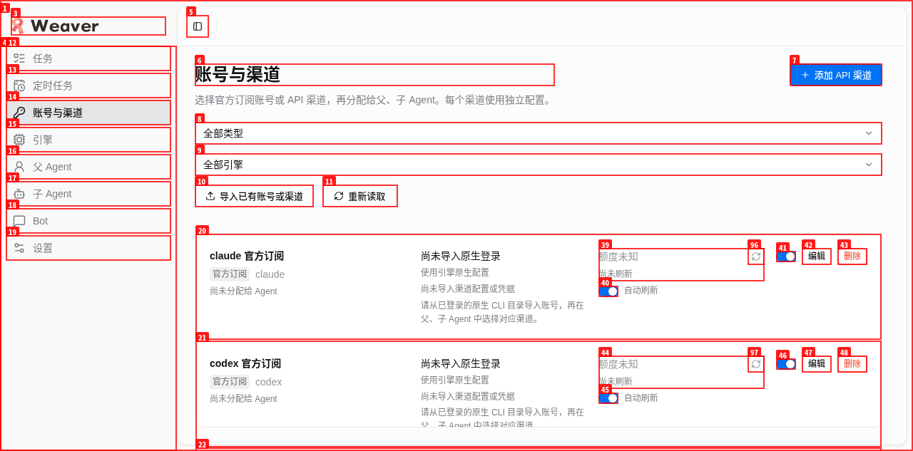
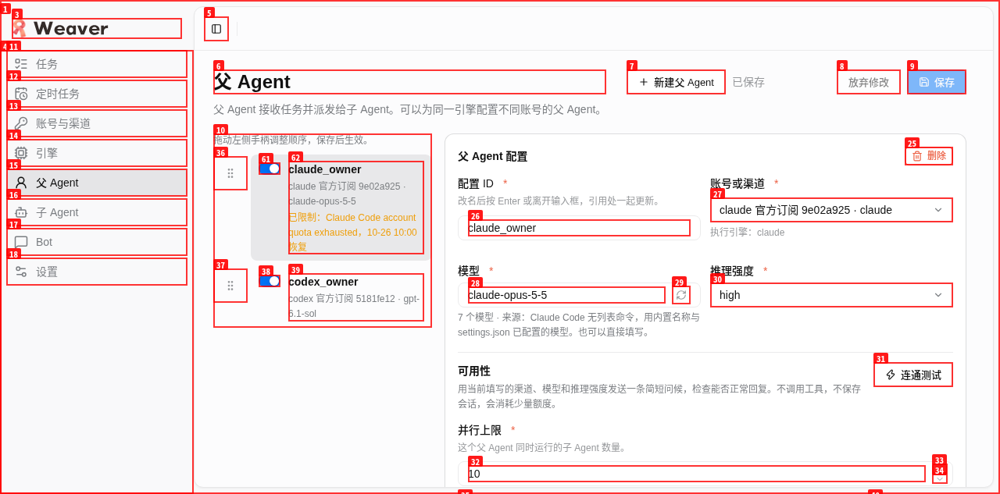

日期：2026-10-25（Asia/Shanghai）。范围：用户级standalone、原用户服务、真实schema与原生身份导入、飞书IM配置语义、只读浏览器验收。
首次维护发现legacy IM仍引用无凭据占位渠道；正式源码修复经验证后完成第二次部署。最终自动选择真实dsh导入渠道，无需保存、重置飞书登录或修改原生来源。
app版本仍为0.7.9。base commit：4cc021b2c54535c0f09d42bab8b525e1ccd2dc3f；部署来自该base加已冻结的IM修复工作树，最终统一提交由owner执行。两份产品文件hash见下表。
| 文件／运行项 | 实际值 |
|---|---|
| src/main/im/settings.ts | 8a8e2b63a003e10d7e6bc35eee130e7fd93a9d172801282fd83c2ba1dff52125 |
| src/main/im/service.ts | 05a871b3ca010c59310f40a95a1ee178637d387b1853a4d018ffa156b5d6f2ff |
| 已安装binary SHA256 | 2cbf137f8356101c242e4a4ba22aab0c879315ee69a201ac196dd8fda9aeb236 |
| 原服务 | weaver.service，PID 1109320，systemd active，HTTP200，127.0.0.1:4737；原data-dir不变。schema13、integrity ok、runningWorkers0。 |
两次目标unit维护均使用正式server stop/start，不传cancel-workers；原有native任务记录保留，未取消其他任务。第一次部署进行schema12→13与原生导入；第二次部署修复IM读时归一，不重复改历史policy。
| 检查 | 实际结果 |
|---|---|
| 旧任务与事件 | 原1232条任务、101686条事件、849条artifact、1209条package逐条保持。正式修复新增任务与证据另计，未用清库或覆盖历史回避升级。 |
| Policy历史与角色 | 333条历史policy按schema13规范转换后逐行保留，原生导入仅追加1条，revision384。2父角色、7子角色的engine、模型、强度、开关、权重及其他非channel属性均保持并绑定真实凭据；4条旧blocks语义保持，未unblock。 |
| 渠道 | 13渠道：7个schema占位、5个真实官方订阅（Codex/Claude/Grok/Qoder/OpenCode）、1个真实dsh API。5官方均有私有credentials，dsh API有key；占位与真实身份分开记录，未用补空渠道冒充原生导入。 |
| 原生来源 | 16个原生来源文件hash及OpenCode原生账号/state表摘要不变；IM settings/inbox、旧policy/tasks JSON字节hash保持。 |
| 飞书IM | enabled=true，1个绑定用户、4个工作空间、appSecretConfigured=true及所有私有业务字段保持。v4文件不落盘改写；读时channel为import_12c10a0745e6e2a1a214b91e，该渠道有dsh key，connection=connected、agentState=ready、active/busy sessions=0。Bot UI显示已连接、Agent就绪及真实dsh渠道，无旧错误。 |
| 重复迁移与维护态 | 在线一致性schema12副本迁到13，validateConfig零问题；二次加载历史hash不变。第二次真实启动仅janitor_sweeps/kv维护态变化，任务/事件/policy不变。 |
本机standalone构建与隔离SQLite selftest均通过。IM修复先复现红测，再106项相关测试全部通过、typecheck通过；owner最终npm run check通过：2155 tests，2123 pass、32条件skip、0 fail，含typecheck与build，源码hash前后不变。技能扫描因既有.worktrees目录覆盖不完整（exit2），4个本次源码/测试文件零命中，未把不完整扫描声称全量通过。
最终binary使用任务专属全局Chrome，只读访问渠道、父角色、子角色、引擎、Bot页。渠道／父角色／引擎3次正式采证artifact_errors为空，console消息0、网络4xx/5xx为0；未保存配置、点Hello、运行任务或触发主动额度刷新。
机器核验结果与来源hash · 渠道DOM（账号脱敏） · 父角色DOM · 子角色DOM（账号脱敏） · 引擎DOM


持久私有回滚备份owner：mocha；用途：本次真实升级回滚。准确路径：/home/mocha/.local/share/weaver/backups/local-accounts-20261025T032147Z-4cc021b，目录0700、文件0600，保留不回收。包含旧binary、原unit、旧技能、在线schema12 DB、原始schema12全量冷归档及冷DB；第二次维护另存schema13 DB/全量冷归档与修复前binary，不覆盖初始备份。冷归档排除backups递归，两个schema的DB均恢复可读且integrity ok。
全局agents-weaver无Weaver ownership标记，未force覆盖。真实weaver.service保持运行供继续使用，业务数据与必要私有配置保留。任务Chrome已关闭，profile已通过bh删除；一次性构建产物、编译缓存、SQLite演练副本与原始浏览器证据已精确回收。最终报告及最小脱敏证据保留；父Agent调度交接文件由owner统一收尾。
整体产品验收未通过。用户在本次维护后实报账号渠道内容无法滚动、本地数据导入失败，并明确新需求：移除引擎页、所有引擎默认启用且由账号控制；添加账号须区分官方/API，官方账号通过独立配置启动登录、等待认证写入，并按指定配置调度。这些完整交互未在本次只读升级验收覆盖，不能从顶部可读、自动原生导入成功推断其通过。owner已另开正式纠偏，本报告不把后续修复记为完成。
本worker未执行收费推理试跑、Hello或主动额度探针，不宣称计费归属或所有引擎端到端实跑已验证。正式IM纠偏由另一个真实Codex CLI worker执行，证明部署后的渠道路径可实际启动，仍不等同于计费隔离验证。后台额度可自然运行，旧限制保持。
Pi未安装且models/auth为空，无可迁身份；Qoder现有allow_byok=0，无伪造BYOK；本次OpenCode原生来源只枚举出1个组织，未制造额外身份。legacy身份有多个候选时安全地留空要求显式选择；本次真实dsh为唯一可用同provider API候选。